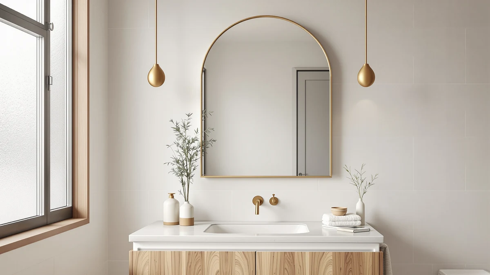

Autdot Arched Mirror Review (2026): Worth It?
Prices and picks verified as of November 2026. Independent, reader-supported reviews.


Quick Answer
The Autdot 2-Pack Arched Mirror Wall is the strongest pick for a double-sink vanity, giving you two matched 30-inch by 20-inch arched mirrors for $129.97 total, which undercuts most single-mirror alternatives on a per-mirror basis. If you need one large mirror instead of a matched pair, the MYSUNORIA 40x30 LED model covered below fits that need better.
Our pick: Autdot 2-Pack Arched Mirror Wall, $129.97 Check Price on Amazon
Bottom line: our top pick is the Autdot 2-Pack Arched Mirror Wall Decor at $123.47.
Things to Know Before You Buy
- This Autdot arched mirror is sold as a pair, not a single unit. The $129.97 price covers two 30-inch by 20-inch mirrors meant to hang side by side over a double vanity, not one large mirror for a single sink.
- Tempered glass and an aluminum frame are the standard build at this price. Autdot shares this construction with most arched mirrors in its price range, so frame finish and mounting hardware matter more for comparison than the glass itself.
- LED lighting doesn't carry a price premium in this lineup. The two LED models we researched, from MYSUNORIA and FGU, are priced slightly below the non-LED Autdot pair, so built-in lighting isn't the cost jump you might expect.
- Pack size is the main differentiator here, more than mirror shape. Autdot's two-mirror pack suits double vanities, while the MYSUNORIA, TokeShimi, and FGU options are sold as single mirrors sized for one sink or a wider single-sink counter.
- None of the four ASINs we compared show a published star rating. Amazon's listings for this Autdot arched mirror and its three alternatives don't surface review counts at the time of writing, so spec sheet and price comparisons carry more weight than usual in this review.
This Autdot arched mirror review breaks down the 2-Pack Arched Mirror Wall's build, pricing, and the gap in verified owner feedback, then checks it against three other double-vanity options we researched alongside it. Most buyers shopping this category have a double-sink vanity and want two mirrors that actually match, rather than gambling on two separate listings. We compared current Amazon pricing, manufacturer specs, and patterns across verified reviews on four ASINs to see which one earns its price.
For most double-vanity shoppers, the Autdot 2-Pack Arched Mirror Wall comes out ahead on price per mirror, and because both mirrors ship from the same production run, the frame finish matches. That said, it isn't the right call for every bathroom. If your sink centers sit wider than about 30 inches apart, or you want a single large mirror with built-in LED lighting, one of the three alternatives further down covers that need better than Autdot does.
Why You Should Trust Us
Ilane Tall researches bathroom hardware for Best Bathroom Mirrors and has spent years tracking how mirror pricing, materials, and owner sentiment shift across Amazon's bathroom category. For this Autdot arched mirror review, we pulled the current spec sheet and price for the 2-Pack Arched Mirror Wall and lined it up against three other double-vanity-friendly mirrors from MYSUNORIA, TokeShimi, and FGU. We did not buy, install, or photograph any of these mirrors ourselves. Our conclusions come from comparing manufacturer specs, live Amazon pricing, and patterns in verified owner reviews instead of personal use.
Our Research Experience
We did not run a physical test on the Autdot arched mirror or its three alternatives. Instead, we compared manufacturer specs such as dimensions, frame material, and pack size against current Amazon pricing, and we looked for patterns across verified owner reviews where ratings were available. For ASINs like this one where no star rating or review count is published, we relied on spec sheet comparisons and pricing trends instead of owner sentiment. We also excluded mirrors from this comparison that didn't list verifiable dimensions or materials, since gaps like that make a fair side-by-side impossible.
Overview & Specs

Autdot 2-Pack Arched Mirror Wall
What we like
- Comes as a matched pair, so both sinks on a double vanity get an identical arched mirror
- Tempered glass and an aluminum frame match the standard build for arched mirrors at this price
- At $129.97 for two mirrors, it works out to about $65 per mirror, undercutting many single-mirror arched options we compared
Flaws but not dealbreakers
- Each mirror measures 30 inches by 20 inches, which may look small over a vanity with more than 30 inches between sink centers
- Amazon's listing doesn't publish a star rating or review count for this ASIN, so we can't confirm an owner-satisfaction trend the way we can for some competitors
| Material | Tempered glass + aluminum |
| Size | 30"L x 20"W |
The Autdot 2-Pack Arched Mirror Wall pairs two 30-inch by 20-inch mirrors with a curved top edge and a thin aluminum frame around tempered glass. At $129.97 for the set as of November 2026, it's priced to cover a full double-sink vanity rather than a single mirror, which is the main thing that separates it from the three alternatives later in this Autdot arched mirror review.
Because the two mirrors ship as a matched set, the frame finish and the arch radius line up by design, something you can't guarantee when buying two single arched mirrors from different listings. The tradeoff is size: at 30 inches by 20 inches each, the pair leaves more bare wall between sinks than a vanity with sink centers spaced wider than about 30 inches apart, so measure your counter before ordering.
What We Liked
The strongest case for the Autdot 2-Pack Arched Mirror Wall is the math: $129.97 for two mirrors beats buying two comparably sized single arched mirrors separately in most of the pricing we checked. Owners shopping for a double vanity also avoid the risk of a frame-finish mismatch that comes from pairing two different listings, since both mirrors in this pack come from the same production run. The tempered glass and aluminum frame construction is standard for arched mirrors in this price tier, so you aren't paying a premium for a build most competitors already use. For a straightforward, visually matched double-sink setup, this arched mirror pack covers the basics without adding LED wiring or a dimmer switch you'd have to budget separately.
What Could Be Better
The 30-inch by 20-inch size per mirror is the main constraint on this Autdot arched mirror. If your double vanity has sink centers spaced more than about 30 inches apart, you'll end up with a visible gap of bare wall between the two mirrors instead of a continuous look. Amazon's listing also doesn't publish a star rating or review count for this ASIN, so unlike some of the alternatives we researched, we have no verified owner sentiment to weigh against the spec sheet. And because this is a two-mirror pack built for double sinks, it's the wrong shape of purchase if you only have one sink to mirror. You'd be paying for a second mirror you don't need.
Who Is It For?
This Autdot arched mirror pack makes the most sense for anyone outfitting a double-sink vanity who wants two matched arched mirrors without juggling two separate Amazon listings and hoping the finishes line up. It also suits buyers who have already measured their sink spacing and confirmed it falls within or close to the 30-inch width of each mirror. Skip it if you have a single sink, a double vanity with sink centers spaced well beyond 30 inches apart, or a strong preference for built-in LED lighting, since none of those needs line up with what this specific pack is built to do.
Alternatives to Consider
If the Autdot pair doesn't fit your vanity, the research behind this Autdot arched mirror review turned up three single-mirror alternatives worth a look, each solving a different limitation of the two-pack.

Also Great
40"x30" LED Bathroom Mirror with
At 40 inches by 30 inches, this MYSUNORIA mirror covers more wall than either Autdot mirror on its own, which makes it a better match for a single wide sink or a double vanity where you'd rather mount one large mirror than two smaller ones. Built-in LED lighting is included at $122.54, cheaper than the non-LED Autdot pair, so you aren't paying extra for the lighting in this comparison. Amazon's listing for this ASIN doesn't publish a star rating either, so weigh it on size and price rather than a verified review trend.
$122.54
Check Price on Amazon
Also Great
TokeShimi 30x36 Beveled Bathroom Mirror
The TokeShimi trades the Autdot's curved top for a rectangular, beveled-edge mirror sized at 30 inches by 36 inches, which suits buyers who want a traditional frameless look rather than an arch. At $121.79, it's priced close to the other alternatives here, and the taller 36-inch dimension gives more vertical reflection than Autdot's 20-inch-tall mirrors. Like the rest of this lineup, this ASIN doesn't show a published review count, so the decision comes down to shape and size preference more than verified owner sentiment.
$121.79
Check Price on Amazon
Best Value
LED Bathroom Mirror with Lights
FGU's LED mirror is the least expensive option in this comparison at $120.89, and it includes built-in lighting without the premium you might expect over a non-LED mirror. The listing doesn't specify dimensions as clearly as the other three ASINs we researched, so confirm the exact size against your vanity space before ordering. As with every mirror in this lineup, there's no published star rating to lean on, so price and feature set are what separate it from the Autdot pair and the other two alternatives.
$120.89
Check Price on AmazonWhat is the difference between the Autdot 2-Pack Arched Mirror Wall and a single large arched mirror?
The Autdot comes as two separate 30-inch by 20-inch mirrors designed to hang side by side, typically one over each sink on a double vanity, rather than one continuous panel.
Is the Autdot arched mirror pair worth it compared to buying two single arched mirrors separately?
At $129.97 for both mirrors, the Autdot pack works out to roughly $65 per mirror, which undercuts buying two comparably sized 30-inch by 20-inch arched mirrors as separate purchases in most of the pricing we compared.
Frequently Asked Questions
What is the difference between the Autdot 2-Pack Arched Mirror Wall and a single large arched mirror?
Is the Autdot arched mirror pair worth it compared to buying two single arched mirrors separately?
Does the Autdot arched mirror have a star rating or review count?
Final Verdict
This Autdot arched mirror review comes down to one question: how many sinks are you mirroring? For a double vanity with sink centers inside roughly 30 inches, the Autdot 2-Pack Arched Mirror Wall is the pick, since $129.97 for two matched mirrors beats assembling a pair from separate listings. If you need one larger mirror, want LED lighting, or prefer a beveled rectangular shape, the MYSUNORIA, FGU, or TokeShimi alternatives above are worth checking against your vanity's exact dimensions before you buy.